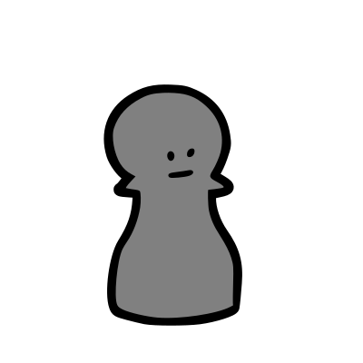
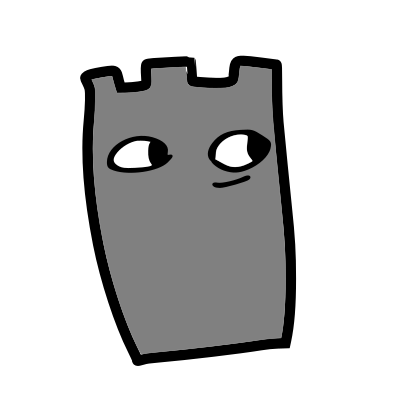
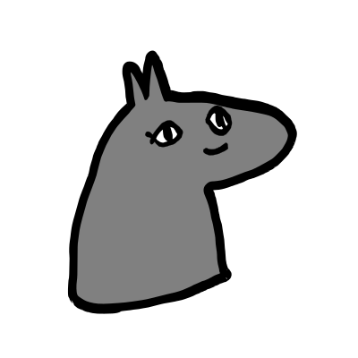
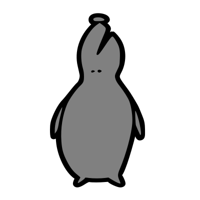
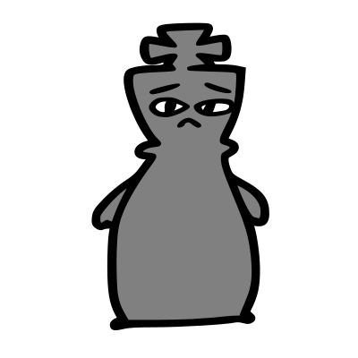

On the Subject of Horsey
Yes, it's another Chess module.
On the module, there's a chess puzzle shown. The defuser has to make the best possible moves in order to solve the module (the puzzles might not go until checkmate).Basic Chess rules
Chess is a board game for 2 players consisting of a board with a 8×8 grid of cells and 6 different kinds of pieces (Pawn, Rook, Knight, Bishop, Queen, King) with dark or light colors in respect to the player they belong to. Each kind of piece has a different moveset and can capture a piece of the different color if collides with it. The goal is for the player to protect their king whilst trying to checkmate the other player's king (putting it in a position where it's impossible to defend it). When their king is in check (could be captured by the other player), they have to defend it in their turn by either moving it, taking down the piece that could capture it, or blocking the other player's piece's way with another piece. The player who gets checkmated loses.
Pieces
| Piece | Piece name | Moveset |
|---|---|---|
|  | Pawn | Moves one space forward (upwards) relative to the player's position, unless it's the pawn's first move in which case it can move 2 spaces forward. Can only capture pieces on a diagonal forward (TL, TR).* |
|  | Rook | Moves any number of spaces in any direction on either axis (not diagonally) until collides with another piece. |
|  | Knight | Moves 2 spaces on one axis and another space on the other one (not diagonally) in any direction. |
|  | Bishop | Moves any number of spaces in any direction diagonally until collides with another piece. |
 |
Queen | Moves any number of spaces in any direction until collides with another piece. |
|  | King | Moves 1 space in any direction.* |